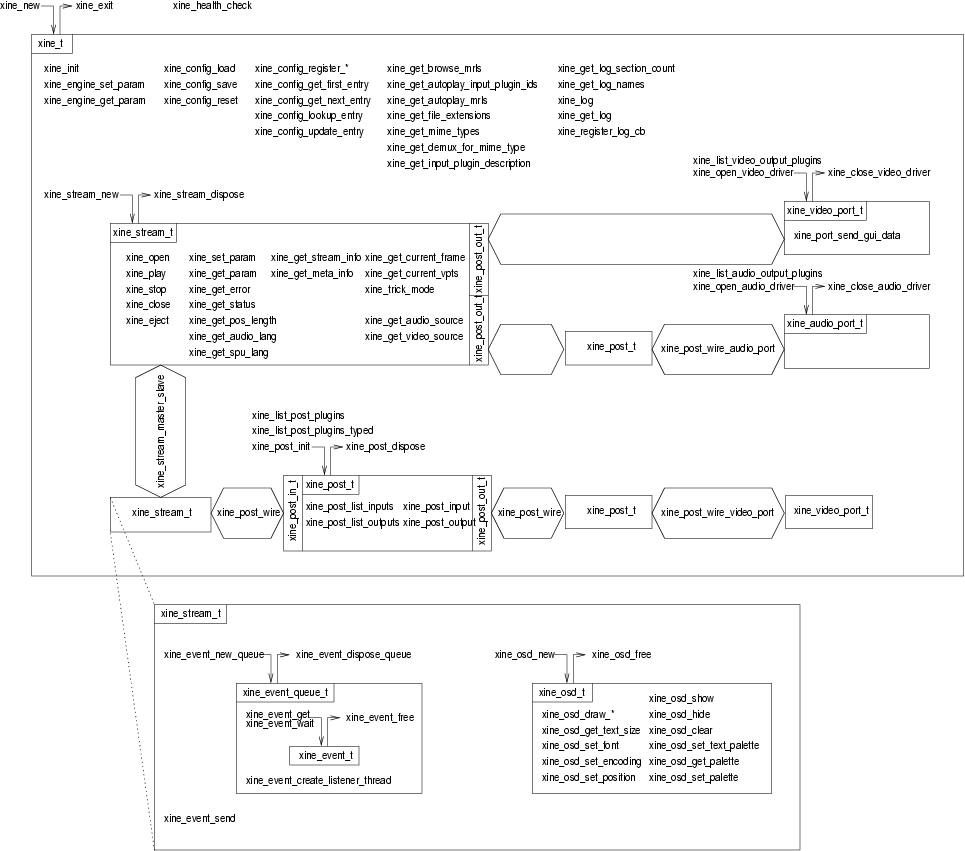
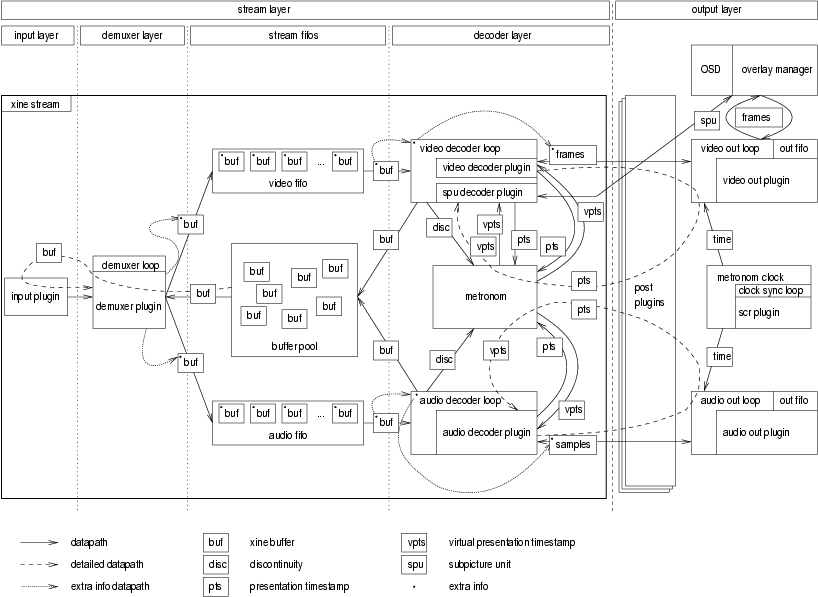
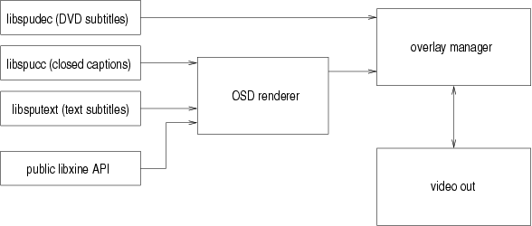

Copyright © 2001-2003 the xine project team
You are currently looking at a piece of documentation for xine. xine is a free video player. It lives on http://xinehq.de/. Specifically this document goes under the moniker of the "xine Hackers' Guide".
This document should help xine hackers to find their way through xine's architecture and source code. It's a pretty free-form document containing a loose collection of articles describing various aspects of xine's internals. It has been written by a number of people who work on xine themselves and is intended to provide the important concepts and methods used within xine. Readers should not consider this document to be an exhausative description of the internals of xine. As with all projects which provide access, the source-code should be considered the definitive source of information.
This document is being developed in the xine-lib cvs repository within the directory doc/hackersguide/. If you are unsure what to do with the stuff in that directory, please read the README file located there.
New versions of this document can also be obtained from the xine web site: http://xinehq.de/.
All comments, error reports, additional information and criticism concerning this document should be directed to the xine documentations mailing list <xine-docs@lists.sourceforge.net>. Questions about xine hacking in general should be sent to the developer mailing list <xine-devel@lists.sourceforge.net>.
The following drawing shows the components of xine as outside applications see them. For every component, the functions for creating and destroying it are given. Every other function works in the context it is enclosed in. Functions that facilitate the connection of the individual components are also given.

outside view on xine components
The function are named just to give you an overview of what is actually there. It is all thoroughly documented in the plublic header xine.h, which is the main and preferably the only xine header, clients should include. (xine/xineutils.h and the XML parser might make an exception.)
Details on the OSD feature can be found in the OSD section.
The best way to explain this seems to be actual code. Below you will find a very easy and hopefully self-explaining xine frontend to give you a start.
/*
** Copyright (C) 2003 Daniel Caujolle-Bert <segfault@club-internet.fr>
**
** This program is free software; you can redistribute it and/or modify
** it under the terms of the GNU General Public License as published by
** the Free Software Foundation; either version 2 of the License, or
** (at your option) any later version.
**
** This program is distributed in the hope that it will be useful,
** but WITHOUT ANY WARRANTY; without even the implied warranty of
** MERCHANTABILITY or FITNESS FOR A PARTICULAR PURPOSE. See the
** GNU General Public License for more details.
**
** You should have received a copy of the GNU General Public License
** along with this program; if not, write to the Free Software
** Foundation, Inc., 59 Temple Place - Suite 330, Boston, MA 02111-1307, USA.
**
*/
/*
* compile-command: "gcc -Wall -O2 `xine-config --cflags` `xine-config --libs` -lX11 -lm -o xinimin xinimin.c"
*/
#include <stdio.h>
#include <string.h>
#include <math.h>
#include <X11/X.h>
#include <X11/Xlib.h>
#include <X11/Xutil.h>
#include <X11/keysym.h>
#include <X11/Xatom.h>
#include <X11/Xutil.h>
#include <X11/extensions/XShm.h>
#include <xine.h>
#include <xine/xineutils.h>
#define MWM_HINTS_DECORATIONS (1L << 1)
#define PROP_MWM_HINTS_ELEMENTS 5
typedef struct {
uint32_t flags;
uint32_t functions;
uint32_t decorations;
int32_t input_mode;
uint32_t status;
} MWMHints;
static xine_t *xine;
static xine_stream_t *stream;
static xine_video_port_t *vo_port;
static xine_audio_port_t *ao_port;
static xine_event_queue_t *event_queue;
static Display *display;
static int screen;
static Window window[2];
static int xpos, ypos, width, height, fullscreen;
static double pixel_aspect;
static int running = 0;
/* this will be called by xine, if it wants to know the target size of a frame */
static void dest_size_cb(void *data, int video_width, int video_height, double video_pixel_aspect,
int *dest_width, int *dest_height, double *dest_pixel_aspect) {
if(!running)
return;
*dest_width = width;
*dest_height = height;
*dest_pixel_aspect = pixel_aspect;
}
/* this will be called by xine when it's about to draw the frame */
static void frame_output_cb(void *data, int video_width, int video_height,
double video_pixel_aspect, int *dest_x, int *dest_y,
int *dest_width, int *dest_height,
double *dest_pixel_aspect, int *win_x, int *win_y) {
if(!running)
return;
*dest_x = 0;
*dest_y = 0;
*win_x = xpos;
*win_y = ypos;
*dest_width = width;
*dest_height = height;
*dest_pixel_aspect = pixel_aspect;
}
static void event_listener(void *user_data, const xine_event_t *event) {
switch(event->type) {
case XINE_EVENT_UI_PLAYBACK_FINISHED:
running = 0;
break;
case XINE_EVENT_PROGRESS:
{
xine_progress_data_t *pevent = (xine_progress_data_t *) event->data;
printf("%s [%d%%]\n", pevent->description, pevent->percent);
}
break;
/* you can handle a lot of other interesting events here */
}
}
int main(int argc, char **argv) {
char configfile[2048];
x11_visual_t vis;
double res_h, res_v;
char *vo_driver = "auto";
char *ao_driver = "auto";
char *mrl = NULL;
int i;
Atom XA_NO_BORDER;
MWMHints mwmhints;
/* parsing command line */
for (i = 1; i < argc; i++) {
if (strcmp(argv[i], "-vo") == 0) {
vo_driver = argv[++i];
}
else if (strcmp(argv[i], "-ao") == 0) {
ao_driver = argv[++i];
}
else
mrl = argv[i];
}
if (!mrl) {
printf("specify an mrl\n");
return 1;
}
printf("mrl: '%s'\n", mrl);
if (!XInitThreads()) {
printf("XInitThreads() failed\n");
return 1;
}
/* load xine config file and init xine */
xine = xine_new();
sprintf(configfile, "%s%s", xine_get_homedir(), "/.xine/config");
xine_config_load(xine, configfile);
xine_init(xine);
display = XOpenDisplay(NULL);
screen = XDefaultScreen(display);
xpos = 0;
ypos = 0;
width = 320;
height = 200;
/* some initalization for the X11 Window we will be showing video in */
XLockDisplay(display);
fullscreen = 0;
window[0] = XCreateSimpleWindow(display, XDefaultRootWindow(display),
xpos, ypos, width, height, 1, 0, 0);
window[1] = XCreateSimpleWindow(display, XDefaultRootWindow(display),
0, 0, (DisplayWidth(display, screen)),
(DisplayHeight(display, screen)), 0, 0, 0);
XSelectInput(display, window[0], (ExposureMask | ButtonPressMask | KeyPressMask |
ButtonMotionMask | StructureNotifyMask |
PropertyChangeMask | PointerMotionMask));
XSelectInput(display, window[1], (ExposureMask | ButtonPressMask | KeyPressMask |
ButtonMotionMask | StructureNotifyMask |
PropertyChangeMask | PointerMotionMask));
XA_NO_BORDER = XInternAtom(display, "_MOTIF_WM_HINTS", False);
mwmhints.flags = MWM_HINTS_DECORATIONS;
mwmhints.decorations = 0;
XChangeProperty(display, window[1],
XA_NO_BORDER, XA_NO_BORDER, 32, PropModeReplace, (unsigned char *) &mwmhints,
PROP_MWM_HINTS_ELEMENTS);
XMapRaised(display, window[fullscreen]);
res_h = (DisplayWidth(display, screen) * 1000 / DisplayWidthMM(display, screen));
res_v = (DisplayHeight(display, screen) * 1000 / DisplayHeightMM(display, screen));
XSync(display, False);
XUnlockDisplay(display);
/* filling in the xine visual struct */
vis.display = display;
vis.screen = screen;
vis.d = window[fullscreen];
vis.dest_size_cb = dest_size_cb;
vis.frame_output_cb = frame_output_cb;
vis.user_data = NULL;
pixel_aspect = res_v / res_h;
/* opening xine output ports */
vo_port = xine_open_video_driver(xine, vo_driver, XINE_VISUAL_TYPE_X11, (void *)&vis);
ao_port = xine_open_audio_driver(xine , ao_driver, NULL);
/* open a xine stream connected to these ports */
stream = xine_stream_new(xine, ao_port, vo_port);
/* hook our event handler into the streams events */
event_queue = xine_event_new_queue(stream);
xine_event_create_listener_thread(event_queue, event_listener, NULL);
/* make the video window visible to xine */
xine_port_send_gui_data(vo_port, XINE_GUI_SEND_DRAWABLE_CHANGED, (void *) window[fullscreen]);
xine_port_send_gui_data(vo_port, XINE_GUI_SEND_VIDEOWIN_VISIBLE, (void *) 1);
/* start playback */
if (!xine_open(stream, mrl) || !xine_play(stream, 0, 0)) {
printf("Unable to open mrl '%s'\n", mrl);
return 1;
}
running = 1;
while (running) {
XEvent xevent;
XNextEvent(display, &xevent);
switch(xevent.type) {
case KeyPress:
{
XKeyEvent kevent;
KeySym ksym;
char kbuf[256];
int len;
kevent = xevent.xkey;
XLockDisplay(display);
len = XLookupString(&kevent, kbuf, sizeof(kbuf), &ksym, NULL);
XUnlockDisplay(display);
switch (ksym) {
case XK_q:
case XK_Q:
/* user pressed q => quit */
running = 0;
break;
case XK_f:
case XK_F:
{
/* user pressed f => toggle fullscreen */
Window tmp_win;
XLockDisplay(display);
XUnmapWindow(display, window[fullscreen]);
fullscreen = !fullscreen;
XMapRaised(display, window[fullscreen]);
XSync(display, False);
XTranslateCoordinates(display, window[fullscreen],
DefaultRootWindow(display),
0, 0, &xpos, &ypos, &tmp_win);
XUnlockDisplay(display);
xine_port_send_gui_data(vo_port, XINE_GUI_SEND_DRAWABLE_CHANGED,
(void*) window[fullscreen]);
}
break;
case XK_Up:
/* cursor up => increase volume */
xine_set_param(stream, XINE_PARAM_AUDIO_VOLUME,
(xine_get_param(stream, XINE_PARAM_AUDIO_VOLUME) + 1));
break;
case XK_Down:
/* cursor down => decrease volume */
xine_set_param(stream, XINE_PARAM_AUDIO_VOLUME,
(xine_get_param(stream, XINE_PARAM_AUDIO_VOLUME) - 1));
break;
case XK_plus:
/* plus => next audio channel */
xine_set_param(stream, XINE_PARAM_AUDIO_CHANNEL_LOGICAL,
(xine_get_param(stream, XINE_PARAM_AUDIO_CHANNEL_LOGICAL) + 1));
break;
case XK_minus:
/* minus => previous audio channel */
xine_set_param(stream, XINE_PARAM_AUDIO_CHANNEL_LOGICAL,
(xine_get_param(stream, XINE_PARAM_AUDIO_CHANNEL_LOGICAL) - 1));
break;
case XK_space:
/* space => toggle pause mode */
if (xine_get_param(stream, XINE_PARAM_SPEED) != XINE_SPEED_PAUSE)
xine_set_param(stream, XINE_PARAM_SPEED, XINE_SPEED_PAUSE);
else
xine_set_param(stream, XINE_PARAM_SPEED, XINE_SPEED_NORMAL);
break;
}
}
break;
case Expose:
/* this handles (partial) occlusion of our video window */
if (xevent.xexpose.count != 0)
break;
xine_port_send_gui_data(vo_port, XINE_GUI_SEND_EXPOSE_EVENT, &xevent);
break;
case ConfigureNotify:
{
XConfigureEvent *cev = (XConfigureEvent *) &xevent;
Window tmp_win;
width = cev->width;
height = cev->height;
if ((cev->x == 0) && (cev->y == 0)) {
XLockDisplay(display);
XTranslateCoordinates(display, cev->window,
DefaultRootWindow(cev->display),
0, 0, &xpos, &ypos, &tmp_win);
XUnlockDisplay(display);
} else {
xpos = cev->x;
ypos = cev->y;
}
}
break;
}
}
/* cleanup */
xine_close(stream);
xine_event_dispose_queue(event_queue);
xine_dispose(stream);
xine_close_audio_driver(xine, ao_port);
xine_close_video_driver(xine, vo_port);
xine_exit(xine);
XLockDisplay(display);
XUnmapWindow(display, window[fullscreen]);
XDestroyWindow(display, window[0]);
XDestroyWindow(display, window[1]);
XUnlockDisplay(display);
XCloseDisplay (display);
return 0;
} |
The src/ directory in xine-lib contains several modules, this should give you a quick overview on where to find what sources.
Directories marked with "(imported)" contain code that is copied from an external project into xine-lib. Everything below such a directory is up to this project. When modifying code there, be sure to send the patches on.
Audio output plugins. These provide a thin abstraction layer around different types of audio output architectures or platforms. Basically an audio output plugin provides functions to query and setup the audio hardware and output audio data (e.g. PCM samples).
Demuxer plugins that handle various system layer file formats like avi, asf or mpeg. The ideal demuxer know nothing about where the data comes from and who decodes it. It should basically just unpack it into chunks the rest of the engine can eat.
Code to support the DXR3 / hollywood+ hardware mpeg decoder.
Input plugins encapsulate the origin of the data. Data sources like ordinary files, DVDs, CDA or streaming media are handled here.
Some headers for Digital Video Broadcast.
The libdvdnav library for DVD navigation is used by xine's DVD input plugin.
Support for RealMedia streaming as used by the RTSP input plugin.
A52 (aka AC3, aka Dolby Digital) audio decoder library and xine plugin.
We maintain some small integration improving differences between the original liba52 and our copy in the file diff_against_release.patch.
Video decoder plugin using libdivx4linux if it is installed. Currently unmaintained and soon to be discontinued if noone cares to take over.
Audio decoder plugin that does currently nothing but passing through DTS (AC5) data to the audio output plugin. This is only usefull when using an external hardware DTS decoder. James has started to work on software DTS decoding, but has not succeeded so far. Anyone giving him a hand?
The Free AAC Decoder library and xine plugin.
A xine decoder plugin using various audio and video decoders from the ffmpeg decoder pack libavcodec. Their MPEG encoder is also for the DXR3.
To optimize the integration of libavcodec and the xine engine, we maintain some differences between the original ffmpeg and our copy in the file diff_to_ffmpeg_cvs.txt.
The libavcodec decoder pack as used by xine's ffmpeg plugin.
A xine demuxer and decoder plugin for the Free Lossless Audio Codec library, which has to be installed separately.
Audio decoder plugin that "decodes" raw PCM data; most notably endianess-conversions are done here.
Mpeg audio decoder plugin (i.e. mp2 and mp3 decoding). ISO/IEC compliant decoder using fixed point math.
Most important MPEG video decoder plugin, provides fast and high-precision MPEG-1/2 video decoding.
Although this is an imported library, we have heavily modified our internal copy to blend it as seamlessly as possible into the xine engine in order to get the maximum MPEG decoding performance.
James started an effort to bring a recent and unmodified version of libmpeg2 into xine to one day replace our current internal modified libmpeg2 with one closer to the original. But since the full feature catalog has not yet been achieved with the new one, it is still disabled.
The code of the imported new libmpeg2.
An MPEG audio decoder plugin baseg on mpg123 code. This plugin is disabled because it is unmaintained. Some people said, it was faster than the libmad decoder. But if noone starts to fix it, it will disappear soon.
A thin wrapper around Real's binary codecs from the Linux RealPlayer to use them as a xine plugin.
A xine decoder plugin for the speex library, which has to be installed separately.
Closed caption subtitle decoder plugin.
DVD SPU subtitle decoder plugin.
Plain text subtitle decoder plugins.
A xine decoder plugin for the theora library, which has to be installed separately.
A xine decoder plugin for the ogg/vorbis library, which has to be installed separately.
Video and audio decoder plugins that exploit some wine code to use win32 (media player and Quicktime) codecs in xine. Works on x86 platforms only.
Stripped down version of wine to support Video for Windows DLLs and additional code to use DirectShow, DMO and QuickTime DLLs.
xine's decoder pack of additional audio decoders.
The gsm610 audio decoder library as used by the related xine plugin.
The nosefart audio decoder library as used by the related xine plugin.
xine's decoder pack of additional video decoders.
A xine decoder plugin for the xvid library, which has to be installed separately. This plugin is unmaintained and unless someone cares to update it, it will be moved to the attic soon.
Video and audio post effect plugins live here. Post plugins modify streams of video frames or audio buffers as they leave the decoder to provide conversion or effects.
The tvtime deinterlacer as a xine video filter post.
The goom audio visualizer as a xine visualizer post.
Some post plugins merging multiple frames into one. For example picture in picture can be done with this.
Some simple 2D video effects as xine video filter posts.
Audio visualization post plugins.
Contains various video output driver plugins. Video output drivers are thin abstraction layers over various video output platforms (e.g. X11, directfb, directX,...). Video output driver plugins provide functions like frame allocation and drawing and handle stuff like hardware acceleration, scaling and colorspace conversion if necessary. They do not handle a/v sync since this is done in the xine-engine already.
A library for direct hardware access to the graphics card as used by the vidix video out plugin.
The vidix system for high performance video output as used by the vidix video out plugin.
The heart of xine - it's engine. Contains code to load and handle all the plugins, the configuration repository as well as the generic decoding loops and code for synchronized output. A lot of helper functions for plugins to use live here as well. What's in the individual files should be guessable by the files' names. This document is not going to explain the source, because it simply changes too often. A look at the architectural drawing in the internals section should give you a pretty good idea, what to expect in this directory. Basically, everything in this picture that is not called "plugin" lives here.
Collection of utility functions and platform abstractions. Also contains a simple XML parser for frontend playlist handling.
xine uses a lot of design principles normally found in object oriented designs. As xine is written in c, a few basic principles shall be explained here on how xine is object oriented anyway.
Classes are structs containing function pointers and public member data. Example:
typedef struct my_stack_s my_class_t;
struct my_stack_s {
/* method "push" with one parameter and no return value */
void (*push)(my_stack_t *this, int i);
/* method "add" with no parameters and no return value */
void (*add)(my_stack_t *this);
/* method "pop" with no parameters (except "this") and a return value */
int (*pop) (my_stack_t *this);
};
/* constructor */
my_class_t *new_my_stack(void); |
To derive from such a class, private member variables can be added:
typedef struct {
my_stack_t stack; /* public part */
/* private part follows here */
int values[MAX_STACK_SIZE];
int stack_size;
} intstack_t; |
Implementation of the "push" method follows:
static void push (my_stack_t *this_gen, int i) {
intstack_t *this = (intstack_t *)this_gen;
this->values[MAX_STACK_SIZE - ++this->stack_size] = i;
} |
Finally the contructor malloc()s the data struct (private variant) and fills in function pointers and default values. Usually the constructor is the only public (i.e. non-static) function in the module:
my_stack_t *new_my_stack(void) {
intstack_t *this;
/* alloc memory */
this = malloc(sizeof(intstack_t));
/* fill in methods */
this->push = push;
this->add = add;
this->pop = pop;
/* init data fields */
this->stack_size = 0;
/* return public part */
return &this->stack;
} |
This section contains some guidelines for writing xine-code. These are really just guidelines, no strict rules. Contributions will not be rejected if they do not meet these rules but they will be even more appreciated if they do.
Comment your interfaces directly in the header files. No doxygen comments, ordinary C comments will do.
Use C-style comments (/* */), not C++-style (//).
When in doubt, use lower case. BTW: This thing is called xine, never Xine.
Use expressive variable and function identifiers on all public interfaces. Use underscores to seperate words in identifiers, not uppercase letters (my_function_name is ok, myFunctionName is not ok).
Avoid macros unless they are really useful. Avoid gotos.
use something like
printf("module: ..."[,...]); |
Refer to emac's C-mode for all questions of proper indentiation. That first of all means: indent with two spaces.
xine offers a wide range of possibilities to display strings. This section should describe when to use which way and how to do it right.
Output which is done thru this function will be displayed for the end user by the frontend. If xine->verbosity is not 0 the messages will also be displayed on the console. Ideally these strings are translated. This function is for information which the user should read always.
xine_log(xine_t *xine, int buf, const char *format, ...); |
This macro uses the xine->verbosity value to decide if the string should be printed to the console. Possible values are XINE_VERBOSITY_NONE, XINE_VERBOSITY_LOG or XINE_VERBOSITY_DEBUG. By default nothing is printed. When you use xine-ui you can enable this output with the --verbose=[1,2] options. This function should be used for information which the user should only read up on request.
xprintf(xine_t *xine, int verbosity, const char *format, ...); |
These macros are for debugging purpose only. Under normal circumstances it is disabled. And can only be enabled by changing a define statement and a recompilation. It has to be enabled for these files that are of interest. It should only be used for information which is intended for developers.
lprintf(const char *format, ...); llprintf(bool, const char *format, ...); |
lprintf can be enabled by defining LOG at the top of the source file. llprintf can be used for more than one categorie per file by using diffent lables:
#define LOG_LOAD 1 #define LOG_SAVE 0 llprintf(LOG_LOAD, "loading was successful\n"); llprintf(LOG_SAVE, "could not save to file %s\n", filename); |
In this case only the first messages is printed. To enable/disable change the defines.
LOG_MODULE should be used to set the modulename for xprintf/lprintf/llprintf. Each output line will start with "modulename: ".
#define LOG_MODULE "modulename" |
LOG_VERBOSE can be defined to enable the logging of functionname and linenumbers. Then the output will be: "modulename: (function_name:42) message".
Make sure you send your patches in unified diff format to the xine-devel mailing list. You'll have to subscribe first, otherwise you're not allowed to post. Please do not send patches to individual developers unless instructed otherwise because your patch is more likely to get lost in an overfull INBOX in that case. Please be patient, it may take 1-2 weeks before you hear any comments on your work (developers may be working on other parts of the code or are simply busy at the moment).

xine engine architecture
Media streams usually consist of audio and video data multiplexed into one bitstream in the so-called system-layer (e.g. AVI, Quicktime or MPEG). A demuxer plugin is used to parse the system layer and extract audio and video packages. The demuxer uses an input plugin to read the data and stores it in pre-allocated buffers from the global buffer pool. The buffers are then added to the audio or video stream fifo.
From the other end of these fifos the audio and video decoder threads consume the buffers and hand them over to the current audio or video decoder plugin for decompression. These plugins then send the decoded data to the output layer. The buffer holding the encoded data is no longer needed and thus released to the global buffer pool.
In the output layer, the video frames and audio samples pass through a post plugin tree, which can apply effects or other operations to the data. When reaching the output loops, frames and samples are enqueued to be displayed, when the presentation time has arrived.
A set of extra information travels with the data. Starting at the input and demuxer level, where this information is generated, the data is attached to the buffers as they wait in the fifo. The decoder loops copy the data to a storage of their own. From there, every frame and audio buffer leaving the stream layer is tagged with the data the decoder loop storage currently holds.
The plugin system enables some of xine's most valuable features:
drop-in extensiability
support parallel installation of multiple (incompatible) libxine versions
support for multiple plugin directories ($prefix/lib/xine/plugins, $HOME/.xine/plugins, ...)
support for recursive plugin directories (plugins are found even in subdirectories of the plugin directories)
version management (On start, xine finds all plugins in its plugin (sub)directories and chooses an appropriate version (usually the newest) for each plugin.)
simplification (Plugins don't have to follow any special naming convention, and any plugin may contain an arbitrary subset of input, demuxer, decoder or output plugins.)
Essentally, plugins are just shared objects, ie dynamic libraries. In contrast to normal dynamic libraries, they are stored outside of the system's library PATHs and libxine does its own bookkeeping, which enables most advanced features mentioned above.
The primary goal for this new plugin mechanism was the need to support simultaneous installation of several (most likely incompatible) libxine versions without them overwriting each other's plugins. Therefore, we have this simple layout:
Plugins are installed below XINE_PLUGINDIR (/usr/local/lib/xine/plugins by default). Note that plugins are never directly installed into XINE_PLUGINDIR. Instead, a separate subdirectory is created for each "plugin provider". A plugin provider is equivalent with the exact version of one source package. Typical examples include "xine-lib-0.9.11" or "xine-vcdnav-1.0". Every source package is free to install an arbitrary number of plugins in its own, private directory. If a package installs several plugins, they may optionally be organized further into subdirectories.
So you will finally end up with something like this:
/usr/local/lib/xine/plugins xine-lib-0.9.11 demux_mpeg_block.so decode_mpeg.so video_out_xv.so ... xine-vcdnav-0.9.11 input_vcdnav.so xine-lib-1.2 input file.so stdin_fifo.so vcd.so demuxers fli.so avi.so ... decoders ffmpeg.so mpeg.so (may contain mpeg 1/2 audio and video decoders) pcm.so ... output video_xv.so audio_oss.so ... xine-lib-3.0 avi.so (avi demuxer) mpeg.so (contains mpeg demuxers and audio/video decoders) video_out_xv.so (Xv video out) ... |
As you can see, every package is free to organize plugins at will below its own plugin provider directory. Additionally, administrators may choose to put plugins directly into XINE_PLUGINDIR, or in a "local" subdirectory. Users may wish to put additional plugins in ~/.xine/plugins/. Again, there may be subdirectories to help organize the plugins.
The default value for XINE_PLUGINDIR can be obtained using the xine-config --plugindir command.
Each plugin library (.so file) contains an arbitrary number of (virtual) plugins. Typically, it will contain exactly one plugin. However, it may be useful to put a set of related plugins in one library, so they can share common code.
First of all, what is a virtual plugin? A virtual plugin is essentially a structure that is defined by the xine engine. This structure typically contains lots of function pointers to the actual API functions. For each plugin API, there are several API versions, and each API version may specify a new, incompatible structure. Therefore, it is essential that only those plugins are loaded that support current libxine's API, so the .so file needs a plugin list that provides libxine with the version information, even before it tries to load any of the plugins.
This plugin list is held in an array named xine_plugin_info":
plugin_info_t xine_plugin_info[] = {
/* type, API, "name", version, special_info, init_function */
{ PLUGIN_DEMUX, 20, "flac", XINE_VERSION_CODE, NULL, demux_flac_init_class },
{ PLUGIN_AUDIO_DECODER, 13, "flacdec", XINE_VERSION_CODE, &dec_info_audio, init_plugin },
{ PLUGIN_NONE, 0, "", 0, NULL, NULL }
}; |
The structure of xine_plugin_info may never be changed. If it ever needs to be changed, it must be renamed to avoid erraneous loading of incompatible plugins.
xine_plugin_info can contain any number of plugins and must be terminated with a PLUGIN_NONE entry. Available plugin types are:
#define PLUGIN_NONE 0 #define PLUGIN_INPUT 1 #define PLUGIN_DEMUX 2 #define PLUGIN_AUDIO_DECODER 3 #define PLUGIN_VIDEO_DECODER 4 #define PLUGIN_SPU_DECODER 5 #define PLUGIN_AUDIO_OUT 6 #define PLUGIN_VIDEO_OUT 7 #define PLUGIN_POST 8 |
The plugin version number is generated from xine-lib's version number like this: MAJOR * 10000 + MINOR * 100 + SUBMINOR. This is not required, but it's an easy way to ensure that the version increases for every release.
Every entry in xine_plugin_info has an initialization function for the plugin class context. This function returns a pointer to freshly allocated (typically via malloc()) structure containing mainly function pointers; these are the "methods" of the plugin class.
The "plugin class" is not what we call to do the job yet (like decoding a video or something), it must be instantiated. One reason for having the class is to hold any global settings that must be accessed by every instance. Remember that xine library is multistream capable: multible videos can be decoded at the same time, thus several instances of the same plugin are possible.
If you think this is pretty much an object-oriented aproach, then you're right.
A fictitious file input plugin that supports input plugin API 12 and 13, found in xine-lib 2.13.7 would then define this plugin list:
#include <xine/plugin.h>
...
plugin_t *init_api12(void) {
input_plugin_t *this;
this = malloc(sizeof(input_plugin_t));
...
return (plugin_t *)this;
}
/* same thing, with different initialization for API 13 */
const plugin_info_t xine_plugin_info[] = {
{ PLUGIN_INPUT, 12, "file", 21307, init_api12 },
{ PLUGIN_INPUT, 13, "file", 21307, init_api13 },
{ PLUGIN_NONE, 0, "", 0, NULL }
} |
You'll find exact definitions of public functions and plugin structs in the appropriate header files for each plugin type: input/input_plugin.h for input plugins, demuxers/demux.h for demuxer plugins, xine-engine/video_decoder.h for video decoder plugins, xine-engine/audio_decoder.h for audio decoder plugins, xine-engine/post.h for post plugins, xine-engine/video_out.h for video out plugins, xine-engine/audio_out.h for audio out plugins. Additional information will also be given in the dedicated sections below.
Many plugins will need some additional "private" data fields. These should be simply added at the end of the plugin structure. For example a demuxer plugin called "foo" with two private fields "xine" and "count" may have a plugin structure declared in the following way:
typedef struct {
/* public fields "inherited" from demux.h */
demux_plugin_t demux_plugin;
xine_t *xine;
int count;
} demux_foo_t; |
The plugin would then access public members via the demux_plugin field and private fields directly.
Summary: Plugins consist of two C-style classes, each representing a different context.
The first is the so called "plugin class" context. This is a singleton context, which means it will exist either not at all or at most once per xine context. This plugin class context is a C-style class which is subclassing the related class from the xine plugin headers. This contains functions, which are independent of the actual instance of the plugin. Most prominently, it contains a factory method to instantiate the next context.
The second context is the instance context. This is another C-style class, which is constructed and disposed withing the plugin class context. This one does the actual work and subclasses the related plugin struct from the xine plugin headers. It is instantiated for every separate running instance of the plugin
Metronom serves two purposes:
Generate vpts (virtual presentation time stamps) from pts (presentation time stamps) for a/v output and synchronization.
Provide a master clock (system clock reference, scr), possibly provided by external scr plugins (this can be used if some hardware decoder or network server dictates the time).
pts/vpts values are given in 1/90000 sec units. pts values in mpeg streams may wrap (that is, return to zero or any other value without further notice), can be missing on some frames or (for broken streams) may "dance" around the correct values. Metronom therefore has some heuristics built-in to generate clean vpts values which can then be used in the output layers to schedule audio/video output.
The heuristics used in metronom have always been a field of research. Current metronom's implementation tries to stick to pts values as reported from demuxers, that is, vpts may be obtained by a simple operation of vpts = pts + vpts_offset, where vpts_offset takes into account any wraps. Whenever pts is zero, metronom will estimate vpts based on previous values. If a difference is found between the estimated and calculated vpts values by above formula, it will be smoothed by using a "drift correction".
Every image frame or audio buffer leaving decoder is tagged by metronom with a vpts information. This will tell video_out and audio_out threads when that data should be presented. Usually there isn't a significative delay associated with video driver, so we expect it to get on screen at the time it's delivered for drawing. Unfortunately the same isn't true for audio: all sound systems implement some amount of buffering (or fifo), any data being send to it now will only get played some time in future. audio_out thread must take this into account for making perfect A-V sync by asking the sound latency to audio driver.
Some audio drivers can't tell the current delay introduced in playback. This is especially true for most sound servers like ESD or aRts and explain why in such cases the sync is far from perfect.
Another problem xine must handle is the sound card clock drift. vpts are compared to the system clock (or even to a different clock provided by a scr plugin) for presentation but sound card is sampling audio by it's own clocking mechanism, so a small drift may occur. As the playback goes on this error will accumulate possibly resulting in audio gaps or audio drops. To avoid that annoying effect, two countermeasures are available (switchable with xine config option audio.av_sync_method):
The small sound card errors are feedbacked to metronom. The details are given by audio_out.c comments:
/* By adding gap errors (difference between reported and expected * sound card clock) into metronom's vpts_offset we can use its * smoothing algorithms to correct sound card clock drifts. * obs: previously this error was added to xine scr. * * audio buf ---> metronom --> audio fifo --> (buf->vpts - hw_vpts) * (vpts_offset + error) gap * <---------- control --------------| * * Unfortunately audio fifo adds a large delay to our closed loop. * * These are designed to avoid updating the metronom too fast. * - it will only be updated 1 time per second (so it has a chance of * distributing the error for several frames). * - it will only be updated 2 times for the whole audio fifo size * length (so the control will wait to see the feedback effect) * - each update will be of gap/SYNC_GAP_RATE. * * Sound card clock correction can only provide smooth playback for * errors < 1% nominal rate. For bigger errors (bad streams) audio * buffers may be dropped or gaps filled with silence. */ |
The audio is stretched or squeezed a slight bit by resampling, thus compensating the drift: The next comment in audio_out.c explains:
/* Alternative for metronom feedback: fix sound card clock drift * by resampling all audio data, so that the sound card keeps in * sync with the system clock. This may help, if one uses a DXR3/H+ * decoder board. Those have their own clock (which serves as xine's * master clock) and can only operate at fixed frame rates (if you * want smooth playback). Resampling then avoids A/V sync problems, * gaps filled with 0-frames and jerky video playback due to different * clock speeds of the sound card and DXR3/H+. */ |
The roots of xine overlay capabilities are DVD subpictures and subtitles support (also known as 'spu'). The DVD subtitles are encoded in a RLE (Run Length Encoding - the most simple compressing technique) format, with a palette of colors and transparency levels. You probably thought that subtitles were just simple text saved into DVDs, right? Wrong, they are bitmaps.
In order to optimize to the most common case, xine's internal format for screen overlays is a similar representation to the 'spu' data. This brings not only performance benefit (since blending functions may skip large image areas due to RLE) but also compatibility: it's possible to reencode any xine overlay to the original spu format for displaying with mpeg hardware decoders like DXR3.
Displaying subtitles requires the ability to sync them to the video stream. This is done using the same kind of pts/vpts stuff of a-v sync code. DVD subtitles, for example, may request: show this spu at pts1 and hide it at pts2. This brings the concept of the 'video overlay manager', that is a event-driven module for managing overlay's showing and hiding.
The drawback of using internal RLE format is the difficulty in manipulating it as graphic. To overcome that we created the 'OSD renderer', where OSD stands for On Screen Display just like in TV sets. The osd renderer is a module providing simple graphic primitives (lines, rectagles, draw text etc) over a "virtual" bitmap area. Everytime we want to show that bitmap it will be RLE encoded and sent to the overlay manager for displaying.

overlays architecture
The overlay manager interface is available to any xine plugin. It's a bit unlikely to be used directly, anyway here's a code snippet for enqueueing an overlay for displaying:
video_overlay_event_t event; event.object.handle = this->video_overlay->get_handle(this->video_overlay,0); memset(this->event.object.overlay, 0, sizeof(*this->event.object.overlay)); /* set position and size for this overlay */ event.object.overlay->x = 0; event.object.overlay->y = 0; event.object.overlay->width = 100; event.object.overlay->height = 100; /* clipping region is mostly used by dvd menus for highlighting buttons */ event.object.overlay->clip_top = 0; event.object.overlay->clip_bottom = image_height; event.object.overlay->clip_left = 0; event.object.overlay->clip_right = image_width; /* the hard part: provide a RLE image */ event.object.overlay->rle = your_rle; event.object.overlay->data_size = your_size; event.object.overlay->num_rle = your_rle_count; /* palette must contain YUV values for each color index */ memcpy(event.object.overlay->clip_color, color, sizeof(color)); /* this table contains transparency levels for each color index. 0 = completely transparent, 15 - completely opaque */ memcpy(event.object.overlay->clip_trans, trans, sizeof(trans)); /* set the event type and time for displaying */ event.event_type = EVENT_SHOW_SPU; event.vpts = 0; /* zero is a special vpts value, it means 'now' */ video_overlay->add_event(video_overlay, &event); |
OSD is a general API for rendering stuff over playing video. It's available both to xine plugins and to frontends.
The first thing you need is to allocate a OSD object for drawing from the renderer. The code below allocates a 300x200 area. This size can't be changed during the lifetime of a OSD object, but it's possible to place it anywhere over the image.
osd_object_t osd; osd = this->osd_renderer->new_object(osd_renderer, 300, 200); |
Now we may want to set font and color for text rendering. Although we will refer to fonts over this document, in fact the OSD can be any kind of bitmap. Font files are searched and loaded during initialization from $prefix/share/xine/fonts/ and ~/.xine/fonts. There's a sample utility to convert truetype fonts at xine-lib/misc/xine-fontconv.c. Palette may be manipulated directly, however most of the time it's convenient to use pre-defined text palettes.
/* set sans serif 24 font */ osd_renderer->set_font(osd, "sans", 24); /* copy pre-defined colors for white, black border, transparent background to starting at the index used by the first text palette */ osd_renderer->set_text_palette(osd, TEXTPALETTE_WHITE_BLACK_TRANSPARENT, OSD_TEXT1); /* copy pre-defined colors for white, no border, translucid background to starting at the index used by the second text palette */ osd_renderer->set_text_palette(osd, TEXTPALETTE_WHITE_NONE_TRANSLUCID, OSD_TEXT2); |
Now render the text and show it:
osd_renderer->render_text(osd, 0, 0, "white text, black border", OSD_TEXT1); osd_renderer->render_text(osd, 0, 30, "white text, no border", OSD_TEXT2); osd_renderer->show(osd, 0); /* 0 stands for 'now' */ |
There's a 1:1 mapping between OSD objects and overlays, therefore the second time you send an OSD object for displaying it will actually substitute the first image. By using set_position() function we can move overlay over the video.
for( i=0; i < 100; i+=10 ) {
osd_renderer->set_position(osd, i, i );
osd_renderer->show(osd, 0);
sleep(1);
}
osd_renderer->hide(osd, 0); |
For additional functions please check osd.h or the public header.
The palette functions demand some additional explanation, skip this if you just want to write text fast without worring with details! :)
We have a 256-entry palette, each one defining yuv and transparency levels. Although xine fonts are bitmaps and may use any index they want, we have defined a small convention:
/* Palette entries as used by osd fonts: 0: not used by font, always transparent 1: font background, usually transparent, may be used to implement translucid boxes where the font will be printed. 2-5: transition between background and border (usually only alpha value changes). 6: font border. if the font is to be displayed without border this will probably be adjusted to font background or near. 7-9: transition between border and foreground 10: font color (foreground) */ |
The so called 'transitions' are used to implement font anti-aliasing. That convention requires that any font file must use only the colors from 1 to 10. When we use the set_text_palette() function we are just copying 11 palette entries to the specified base index.
That base index is the same we pass to render_text() function to use the text palette. With this scheme is possible to have several diferent text colors at the same time and also draw fonts over custom background.
/* obtains size the text will occupy */ renderer->get_text_size(osd, text, &width, &height); /* draws a box using font background color (translucid) */ renderer->filled_rect(osd, x1, y1, x1+width, y1+height, OSD_TEXT2 + 1); /* render text */ renderer->render_text(osd, x1, y1, text, OSD_TEXT2); |
Q: What is the format of the color palette entries?
A: It's the same as used by overlay blending code (YUV).
Q: What is the relation between a text palette and a palette I set with xine_osd_set_palette?
A: xine_osd_set_palette will set the entire 256 color palette to be used when we blend the osd image. "text palette" is a sequence of 11 colors from palette to be used to render text. that is, by calling osd_render_text() with color_base=100 will render text using colors 100-110.
Q: Can I render text with colors in my own palette?
A: Sure. Just pass the color_base to osd_render_text()
Q: Has a text palette change effects on already drawed text?
A: osd_set_text_palette() will overwrite some colors on palette with pre-defined ones. So yes, it will change the color on already drawed text (if you do it before calling osd_show, of course). If you don't want to change the colors of drawed text just use different color_base values.
Q: What about the shadows of osd-objects? Can I turn them off or are they hardcoded?
A: osd objects have no shadows by itself, but fonts use 11 colors to produce an anti-aliased effect. if you set a "text palette" with entries 0-9 being transparent and 10 being foreground you will get rid of any borders or anti-aliasing.
This section defines a draft for a syntactic specification of MRLs as used by xine-lib. The language of MRLs is designed to be a true subset of the language of URIs as given in RFC2396. A type 2 grammar for the language of MRLs is given in EBNF below.
Semantically, MRLs consist of two distinct parts that are evaluated by different components of the xine architecture. The first part, derivable from the symbol <input_source> in the given grammar, is completely handed to the input plugins, with input plugins signaling if they can handle the MRL.
The second part, derivable from <stream_setup> and delimited from the first by a crosshatch ('#') contains parameters that modify the initialization and playback behaviour of the stream to which the MRL is passed. The possible parameters are mentioned in the manpage to xine-ui.
The following definition should be regarded as a guideline only. Of course any given input plugin only understands a subset of all possible MRLs. On the other hand, invalid MRLs according to this definition might be understood for convenience reasons. Some user awareness is required at this point.
EBNF grammar for MRLs:
<mrl> ::= <input_source>[#<stream_setup>]
<input_source> ::= (<absolute_mrl>|<relative_mrl>)
<absolute_mrl> ::= <input>:(<net_path>|<abs_path>)[?<query>]
<relative_mrl> ::= (<abs_path>|<rel_path>)
<net_path> ::= //<authority>[<abs_path>]
<abs_path> ::= /<path_segments>
<rel_path> ::= <rel_segment>[<abs_path>]
<rel_segment> ::= <rel_char>{<rel_char>}
<rel_char> ::= (<unreserved>|<escaped>|;|@|&|=|+|$|,)
<input> ::= <alpha>{(<alpha>|<digit>|+|-|.)}
<authority> ::= (<server>|<reg_name>)
<server> ::= [[<userinfo>@]<host>[:<port>]]
<userinfo> ::= {(<unreserved>|<escaped>|;|:|&|=|+|$|,)}
<host> ::= (<hostname>|<ipv4_address>)
<hostname> ::= {<domainlabel>.}<toplabel>[.]
<domainlabel> ::= (<alphanum>|<alphanum>{(<alphanum>|-)}<alphanum>)
<toplabel> ::= (<alpha>|<alpha>{(<alphanum>|-)}<alphanum>)
<ipv4_address> ::= <digit>{<digit>}.<digit>{<digit>}.<digit>{<digit>}.<digit>{<digit>}
<port> ::= {<digit>}
<reg_name> ::= <reg_char>{<reg_char>}
<reg_char> ::= (<unreserved>|<escaped>|;|:|@|&|=|+|$|,)
<path_segments> ::= <segment>{/<segment>}
<segment> ::= {<path_char>}{;<param>}
<param> ::= {<path_char>}
<path_char> ::= (<unreserved>|<escaped>|:|@|&|=|+|$|,)
<query> ::= {<mrl_char>}
<stream_setup> ::= <stream_option>;{<stream_option>}
<stream_option> ::= (<configoption>|<engine_option>|novideo|noaudio|nospu)
<configoption> ::= <configentry>:<configvalue>
<configentry> ::= <unreserved>{<unreserved>}
<configvalue> ::= <conf_char>{<conf_char>}
<engine_option> ::= <unreserved>{<unreserved>}:<stream_char>{<stream_char>}
<stream_char> ::= (<unreserved>|<escaped>|:|@|&|=|+|$|,)
<mrl_char> ::= (<reserved>|<unreserved>|<escaped>)
<reserved> ::= (;|/|?|:|@|&|=|+|$|,)
<unreserved> ::= (<alphanum>|<mark>)
<mark> ::= (-|_|.|!|~|*|'|(|))
<escaped> ::= %<hex><hex>
<hex> ::= (<digit>|A|B|C|D|E|F|a|b|c|d|e|f)
<alphanum> ::= (<alpha>|<digit>)
<alpha> ::= (<lowalpha>|<upalpha>)
<lowalpha> ::= (a|b|c|d|e|f|g|h|i|j|k|l|m|n|o|p|q|r|s|t|u|v|w|x|y|z)
<upalpha> ::= (A|B|C|D|E|F|G|H|I|J|K|L|M|N|O|P|Q|R|S|T|U|V|W|X|Y|Z)
<digit> ::= (0|1|2|3|4|5|6|7|8|9) |
Many media players expect streams to be stored within files on some local medium. In actual fact, media may be streamed over a network (e.g. via HTTP or RTP), encoded onto a specialized medium (e.g. DVD), etc. To allow you to access all this media, xine supports the concept of an "input plugin". The tasks performed by an input plugin are:
Validation of Media Resource Locators (MRLs).
MRL specific session management (e.g. opening and closing local files).
Reading blocks/specific numbers of bytes from the input device.
In addition to these tasks, the input plugin may keep track of some input device-specific state information (e.g. a DVD plugin may keep track of navigational state data such as current title/chapter).
There are two classes of input device which xine recognizes. Byte-oriented devices can, upon request, return an arbitary non-zero number of bytes from a stream. Examples of such devices are files or network streams. Block-oriented devices, however, have a prefered block or "frame"-size. An example of such a device is a DVD where data is stored in logical blocks of 2048 bytes. One may pass the hint to xine that the plugin is block-oriented by setting the INPUT_CAP_BLOCK capability. Note that this is only a hint and xine does not guarantee that all requests to the plugin will be purely block based.
An input plugin provides API functions which allow the engine to access the data source the plugin encapsulates. The input plugin API is declared in input/input_plugin.h.
An input plugin exports a public function of the form:
void *input_init_plugin(xine_t *xine, void *data); |
char *get_description(input_class_t *this_gen); |
char *get_identifier(input_class_t *this_gen); |
xine_mrl_t **get_dir(input_class_t *this_gen, const char *filename, int *nFiles); |
char **get_autoplay_list(input_class_t *this_gen, int *num_files); |
int eject_media(input_class_t *this_gen); |
void dispose(input_class_t *this_gen); |
input_plugin_t *get_instance(input_class_t *class_gen, xine_stream_t *stream, const char *mrl); |
int open(input_plugin_t *this_gen); |
uint32_t get_capabilities(input_plugin_t *this_gen); |
off_t read(input_plugin_t *this_gen, char *buf, off_t nlen); |
buf_element_t *read_block(input_plugin_t *this_gen, fifo_buffer_t *fifo, off_t len); |
off_t seek(input_plugin_t *this_gen, off_t offset, int origin); |
off_t get_current_pos(input_plugin_t *this_gen); |
off_t get_length(input_plugin_t *this_gen); |
uint32_t get_blocksize(input_plugin_t *this_gen); |
char *get_mrl(input_plugin_t *this_gen); |
int get_optional_data(input_plugin_t *this_gen, void *data, int data_type); |
void dispose(input_plugin_t *this_gen); |
This section is designed to familiarize a programmer with general demuxer concepts and how they apply to the xine multimedia library.
xine's demuxer layer is responsible for taking apart multimedia files or streams so that the engine can decode them and present them to the user. "Demuxer" is short for demultiplexor, which is the opposite of multiplexing. This refers to the process of combining 2 or more things into one. Multimedia streams usually, at a minimum, multiplex an audio stream and a video stream together into one stream. Sometimes, there are multiple audio streams (e.g., for multiple language tracks). Sometimes, there is a subtitle data stream multiplexed into the multimedia stream.
There are many different multimedia formats in existence and there are varying strategies for demuxing different types of multimedia files. Formats in the MPEG family, for example, are designed to allow easy playback from almost any place within the file. Many formats cannot deal with this circumstance and at least need to be demuxed from the beginning of the stream and played through to the end. Some formats, such as MPEG and AVI, have marker information before every chunk in the stream. Other formats, such as Apple Quicktime, are required to have a master index that contains all information for taking apart a file. Many game-oriented multimedia formats are designed strictly for playing from start to finish without any regard to random seeking within the file.
A xine demuxer interacts with xine's input layer in order to receive data. The underlying input plugin might be a file, a network stream, or a block-oriented disc storage device like a DVD. A file input offers the most flexibility in being able to read either blocks of data or individual bytes, and being able to seek freely. Other input plugins may not allow the demuxer to seek (such as stdin or certain network streams). Some input plugins only allow the demuxer to read blocks of data and not individual bytes (such as the CD-DA input plugin). The demuxer needs to check the capabilities of the underlying input plugin before attempting to seek around.
If possible, it is desirable that a demuxer can seek randomly through the stream. This is easier for some file formats and essentially impossible for other formats. xine's seeking API function allows a seek target to be specified in terms of stream offset from 0, or time in milliseconds from 0. Offset-based seeking is useful for seek bars in multimedia applications. Time-based seeking is useful for specifying, e.g., a 1-minute jump forward or backward in a stream.
If a multimedia stream has video, there generally needs to be a way to identify keyframes in the stream in order to facilitate seeking. Many game-oriented formats fall over in this area as they carry no keyframe information aside from the implicit assumption that the first frame is a keyframe.
In a stream with video, a seek operation should always jump to a keyframe. xine Policy: When the seek target is between 2 keyframes, jump to the earlier keyframe. E.g., if there are keyframes at stream offsets 10000 and 20000, and the user requests a seek to offset 18000, choose the keyframe at offset 10000.
Note that there can be difficulties when the audio and video streams are not tightly interleaved. In many formats, the audio frames are several time units ahead of the video frames for the purpose of pre-buffering. This is a typical scenario in the middle of a stream:
audio frame @ time 10 video frame @ time 8 audio frame @ time 11 video frame @ time 9 audio frame @ time 12 keyframe @ time 10 audio frame @ time 13 |
A demuxer plugin provides API functions which allow the engine to initialize demuxing, dispatch data chunks to the engine, seek within the stream, get the stream length, among other functions. The demuxer API is declared in demuxers/demux.h.
Writing a new xine demuxer is largely a process of using other demuxers as references and understanding how they interact with the engine. This section will give a brief overview of each API function.
A demuxer plugin exports a public function of the form:
void *demux_wc3movie_init_plugin(xine_t *xine, void *data); |
char *get_description(demux_class_t *this_gen); |
char *get_identifier(demux_class_t *this_gen); |
char *get_extensions(demux_class_t *this_gen); |
char *get_mimetypes(demux_class_t *this_gen) |
return "video/quicktime: mov,qt: Quicktime animation;" "video/x-quicktime: mov,qt: Quicktime animation;" "application/x-quicktimeplayer: qtl: Quicktime list;"; |
void class_dispose(demux_class_t *this_gen); |
demux_plugin_t *open_plugin(demux_class_t *class_gen, xine_stream_t *stream, input_plugin_t *input_gen); |
NOTE: In the course of checking the stream by content, care must be taken not to consume bytes out of a non-seekable stream. If the stream is non-seekable, use the input plugin's preview buffer facility to get a cache of the first few bytes. If the stream is seekable, reset the stream before operating on the data (you do not know where some other demuxer left the stream positioned).
If the demuxer can handle the stream, it creates a new demux_plugin_t structure and initializes the main demuxer functions which are called by the engine to do the tough demuxing duty. These functions include:
void demux_send_headers(demux_plugin_t *this_gen); |
int demux_send_chunk(demux_plugin_t *this_gen); |
int demux_seek(demux_plugin_t *this_gen, off_t start_pos, int start_time); |
void demux_dispose(demux_plugin_t *this_gen); |
int demux_get_status(demux_plugin_t *this_gen); |
int demux_get_stream_length(demux_plugin_t *this_gen); |
uint32_t demux_get_capabilities(demux_plugin_t *this_gen); |
int demux_get_optional_data(demux_plugin_t *this_gen, void *data, int data_type); |
Demuxer must send data to decoders using two fifos names video_fifo and audio_fifo. Both are available at stream level. The following code fragment shows how it's done.
buf_element_t *buf; buf = stream->video_fifo->buffer_pool_alloc(stream->video_fifo); buf->type = BUF_CONTROL_START; stream->video_fifo->put(stream->video_fifo, buf); |
Buffers must have set the type field as shown. All buffer types are defined in xine-engine/buffer.h.
The control buffer types are very important and must be sent by all kinds of demuxers. They tell decoders to start/stop their operations and inform metronom about discontinuities, either relative or absolute. There is also a reset buffer type that must be sent when demuxers are seeking as a "warm restart" indication to the decoders.
To help finding out buffer types for known codecs, functions from buffer_types.c may be used to convert "FOURCC" codes or audio format tags (as used in AVI files) to the xine byffer type:
buf->type = fourcc_to_buf_video((void*)this->avi->bih.biCompression); |
This section is designed to familiarize a programmer with basic audio and video decoding concepts and how they apply to the xine decoder API.
Audio and video data requires an enormous amount of storage. Thus, the raw data is encoded using a variety of compression techniques which drastically reduces the amount of space required to transmit and store the data. Before playback, the compressed data needs to be decoded.
The process of decoding data is rather straightforward in a computer science sense: An array of encoded data is fed into a decoder and the decoder outputs an array of decoded data which is ready to be presented to the user (either displayed on the screen or played through the speakers).
Raw video data comes in a variety of formats, most commonly in RGB and YUV. xine's output layer currently only accepts data in YV12 format (a.k.a. YUV 4:2:0 planar) or YUY2 format (a.k.a. YUV 4:2:2 packed). If the output format is a RGB space, the data must be converted to an acceptable YUV format before being dispatched to the video output unit. xine has a number of support functions to facilitate converting RGB to YUV.
Raw audio data equates to uncompressed PCM audio. xine's audio output modules expect 8-bit PCM data to be unsigned and 16-bit PCM data to be signed and in little endian format. When there is more than one channel, the channel data is interleaved. For example, stereo data is interleaved as left sample, right sample: LRLRLRLR. If there are 4 or 6 channels, the same interleaving applies: 123456123456.
Writing a new xine decoder for an audio or video format entails accumulating a buffer of encoded data, performing the necessary operations for decoding and then passing it on the appropriate output module. The best reference for understanding the decoder API is the various decoding modules available. In particular, xine has example video and audio decoders named src/libxinevdec/foovideo.c and src/libxineadec/fooaudio.c, respectively.
This section will give a brief overview of each API function. The decoder API is declared in src/xine-engine/video_decoder.h and src/xine-engine/audio_decoder.h.
A decoder plugin must, like every plugin, export a public array of plugin_info_t types. The array usually has 2 entries: The first contains the plugin information regarding the decoder and the second entry is a terminating NULL entry. However, there may be more entries. Each entry contains 6 fields:
plugin type: Either PLUGIN_VIDEO_DECODER or PLUGIN_AUDIO_DECODER.
API: The plugin API revision that this plugin adheres to.
name: A character string that identifies the plugin.
version: #define'd as XINE_VERSION_CODE.
supported types: A structure that defines the buffer types that this plugin can handle.
init function: The function that the xine engine calls in order to initialize this decoder plugin.
void *init_plugin(xine_t *xine, void *data); |
char *get_identifier(video_decoder_class_t *this); |
char *get_identifier(audio_decoder_class_t *this); |
char *get_description(video_decoder_class_t *this); |
char *get_description(audio_decoder_class_t *this); |
void dispose_class(video_decoder_class_t *this); |
void dispose_class(audio_decoder_class_t *this); |
video_decoder_t *open_plugin(video_decoder_class_t *class_gen, xine_stream_t *stream); |
audio_decoder_t *open_plugin(audio_decoder_class_t *class_gen, xine_stream_t *stream); |
void decode_data(video_decoder_t *this_gen, buf_element_t *buf); |
void decode_data(audio_decoder_t *this_gen, buf_element_t *buf); |
A buffer has a decoder_flags field which can have a number of flags set. The first buffer that a decoder receives ought to have the BUF_FLAG_HEADER flag set. This indicates that the buffer content contains the essential setup information for decoding (width, height, etc. for video; sample rate, channels, etc. for audio).
If the BUF_FLAG_HEADER flag is not set, the content of the buffer should be accumulated in a private buffer until a buffer with a BUF_FLAG_FRAME_END flag is set. This indicates that the entire chunk has been transmitted to the decoder and is ready to be decoded. Fetch either an empty video frame or audio buffer from the appropriate output unit. Perform the appropriate decoding operations and set the pts for the output buffer (and the duration, a.k.a. video_step, for video). Dispatch the decoded data to the output and reset the internal buffer accumulation accounting.
void flush(video_decoder_t *this_gen); |
void flush(audio_decoder_t *this_gen); |
void reset(video_decoder_t *this_gen); |
void reset(audio_decoder_t *this_gen); |
void discontinuity(video_decoder_t *this_gen); |
void discontinuity(audio_decoder_t *this_gen); |
void dispose(video_decoder_t *this_gen); |
void dispose(audio_decoder_t *this_gen); |
A lot written above also applies for subpicture unit (SPU) decoders. The SPU decoder API is declared in src/xine-engine/spu_decoder.h. Details on the data, SPU decoders are expected to output, see the section on overlays and OSD.
However, there are some differences to consider. At first, unlike audio and video, subtitles do not form a continuous stream. The decoder will therefore only be called once in a while. The metronom call for timestamping, which for audio and video is done by the engine, has to be done manually for SPU:
vpts = metronom->got_spu_packet(metronom, buf->pts); |
There are also two functions in the SPU decoder API, which have not been discussed above:
int get_interact_info(spu_decoder_t *this_gen, void *data); |
void set_button(spu_decoder_t *this_gen, int32_t button, int32_t mode); |
In order to allow for device-dependant acceleration features, xine calls upon the video output plugin for more than just displaying images. The tasks performed by the video plugins are:
Allocation of vo_frame_t structures and their subsequent destruction.
Allocation of memory for use by one frame (this is to allow for the ability of some video output plugins to map frames directly into video-card memory hence removing the need for the frame to be copied across the PCI/AGP bus at display time).
Most important, the ability to render/copy a given frame to the output device.
Optionally the copying of the frame from a file dependant colour-space and depth into the frame structure. This is to allow for on-the fly colour-space conversion and scaling if required (e.g. the XShm ouput plugin uses this mechanism).
Although these extra responsibilities add great complexity to your plugin it should be noted that they allow plugins to take full advantage of any special hardware-acceleration without sacrificing flexibility.
The video out plugin API is declared in src/xine-engine/video_out.h The plugin info of video out plugins contains the visual type, priority, and the init_class function of the plugin.
The visual_type field is used by xine to determine if the GUI used by the client is supported by the plugin (e.g. X11 output plugins require the GUI to be running under the X Windowing system) and also to determine the type of information passed to the open_plugin() function as its visual parameter.
char *get_description(video_driver_class_t *this_gen); |
char *get_identifier(video_driver_class_t *this_gen); |
void dispose(video_driver_class_t *this_gen); |
vo_driver_t *get_instance(video_driver_class_t *class_gen, const void *visual); |
uint32_t get_capabilities(vo_driver_t *this_gen); |
int get_property(vo_driver_t *self, int property); int set_property(vo_driver_t *self, int property, int value); void get_property_min_max(vo_driver_t *self, int property, int *min, int *max); |
int gui_data_exchange(vo_driver_t *self, int data_type, void *data); |
vo_frame_t *alloc_frame(vo_driver_t *self); |
The function pointers within the frame structure provide a mechanism for the driver to retain full control of how the frames are managed and rendered to. If the VO_CAP_COPIES_IMAGE flag was set in the plugins capabilities then the copy field is required and will be called sequentially for each 16-pixel high strip in the image. The plugin may then decide, based on the frame's format, how this is copied into the frame.
void update_frame_format(vo_driver_t *self, vo_frame_t *img, uint32_t width, uint32_t height, double ratio, int format, int flags); |
void display_frame(vo_driver_t *self, vo_frame_t *vo_img); |
void overlay_begin(vo_driver_t *self, vo_frame_t *vo_img, int changed); void overlay_blend(vo_driver_t *self, vo_frame_t *vo_img, vo_overlay_t *overlay); void overlay_end(vo_driver_t *self, vo_frame_t *vo_img); |
int redraw_needed(vo_driver_t *self); |
void dispose(vo_driver_t *self); |